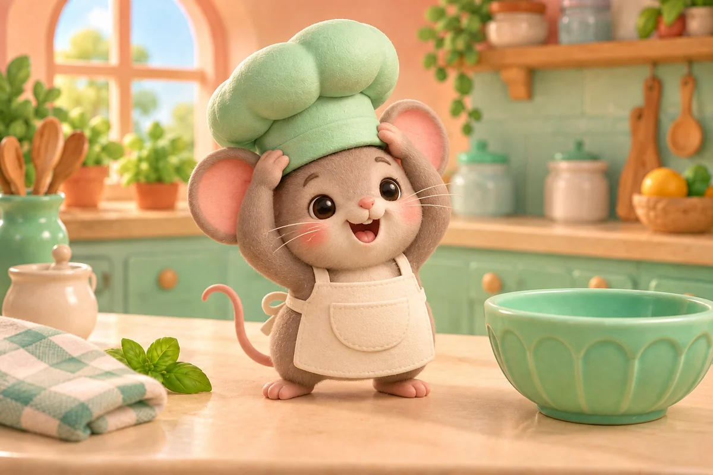
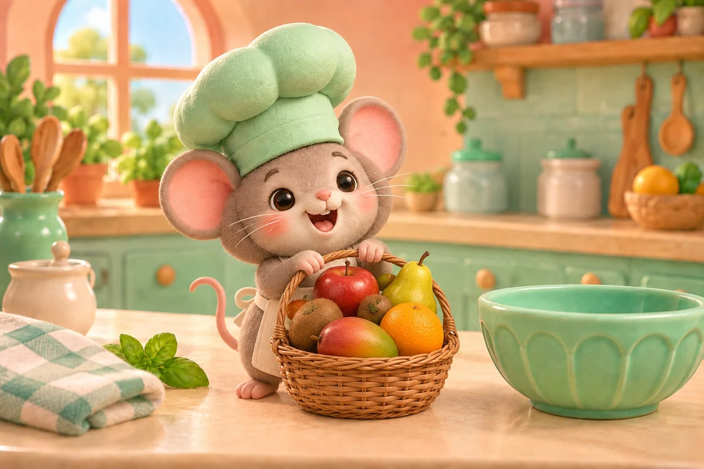
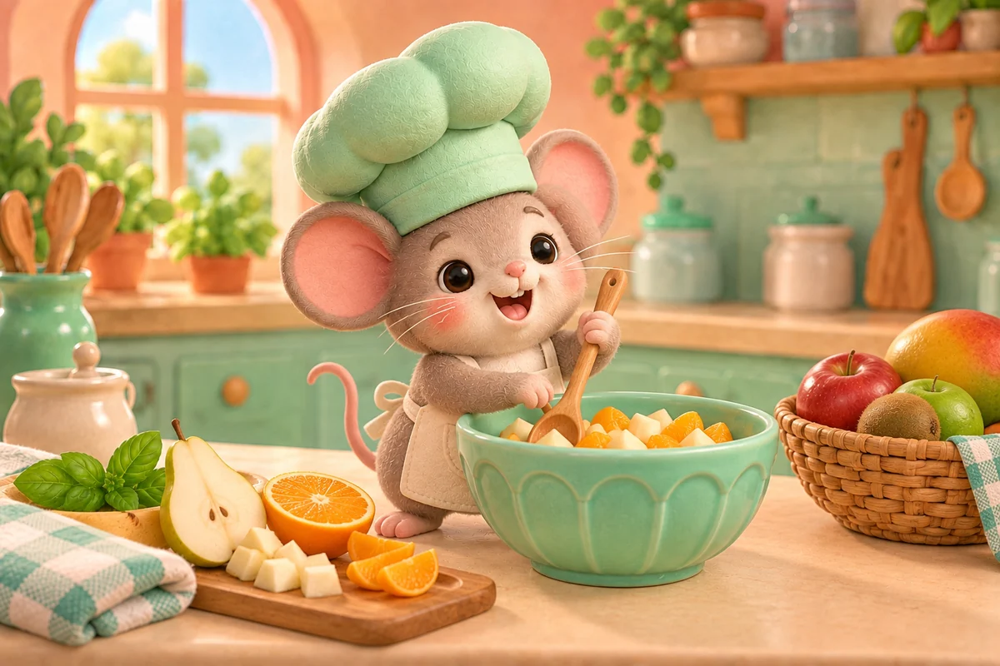
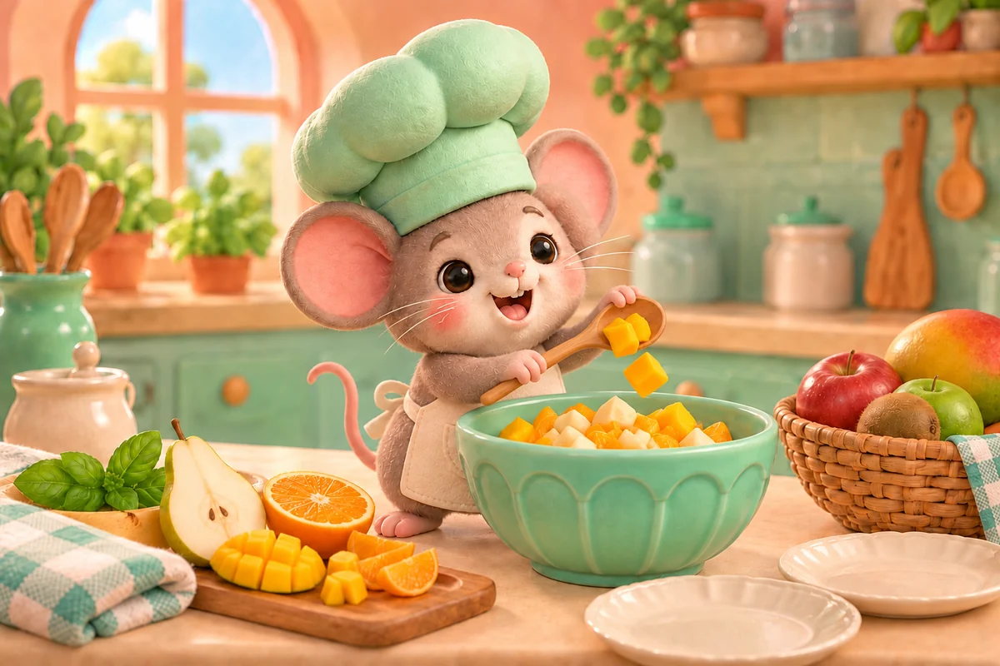

PAGE 01
A tiny rat wore an oversized chef hat.
4 sentences. 4 pictures.

A tiny rat wore an oversized chef hat.

He carried a basket of fruit into his kitchen.

He mixed pears and oranges in a mint bowl.

With a sprinkle of mango, lunch was ready to share.
One tiny taupe-gray rat chef with round pink-centered ears, dark oval eyes, pink nose, fine whiskers, rosy cheeks, cream pocket apron and oversized mint puffy hat. Rat is the only character. All fruit is ordinary faceless food. Same peach kitchen, left arched window, mint cabinets, right wooden herb shelf, cream counter, mint scalloped bowl and mint gingham towel.
← All stories